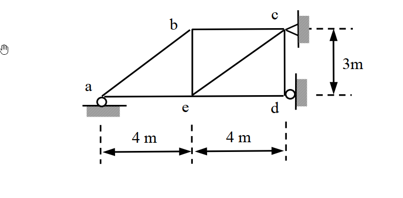

考題編號：SA-2009-1
主分類： SA-U1-1 桁架結構分析
副分類： SA-U1-2 支承沉陷反力計算
分析法： 單位力法 (Force Method) / 最小功法
標籤： 靜不定桁架, 支承沉陷, 柔度法
1. 原始題目重述 (Problem Restatement)
本題為一平面桁架結構分析，由 7 根桿件組成，共有 5 個節點（a, b, c, d, e）。已知各節點的支承條件如下：
- 節點 a：垂直方向受拘束（滾支承），具有已知之支承沉陷 $\Delta_a = -0.1\text{ m}$（向下）。
- 節點 c：水平與垂直方向受拘束（鉸支承）。
- 節點 d：水平方向受拘束（牆面滾支承）。
已知所有桿件的軸向剛度為 $AE = 10^4\text{ kN}$。
題目要求計算在此支承沉陷作用下，結構各支承點的最終反力。

2. 考題核心精神與出題者意圖 (Core Concepts & Examiner's Intent)
本題的核心精神在於評量考生對一次靜不定桁架在「無外力、僅有支承沉陷」作用下的內力與反力分析能力。
出題者的意圖包含：
- 靜不定度判別：要求考生能正確計算桁架的靜不定度（$m+r-2j$），並正確選擇適當的贅力（Redundant Force）。
- 力法（柔度法）的應用：在給定支承沉陷的情況下，考驗考生是否能靈活運用單位虛力法計算基本結構的變位（0-系統），以及單位力作用下的柔度係數（1-系統）。
- 相容方程式的建立：將實際變位與計算變位結合，求解贅力。
3. 解題戰略地圖與陷阱分析 (Strategic Roadmap & Trap Analysis)
戰略地圖：
- 系統判別與贅力選擇：判斷系統為一次靜不定。為簡化計算，選擇節點 d 的水平反力 $R_{dx}$ 為贅力 $X_1$。
- 0-系統（基本結構）分析：在移除贅力後，計算已知支承沉陷對 d 點水平方向造成的相對位移 $\Delta_{10}$。
- 1-系統（單位力系統）分析：在 d 點施加單位水平力，利用節點法求出各桿件內力 $u_i$，並計算柔度係數 $f_{11}$。
- 相容方程式求解：利用 $\Delta_{10} + f_{11}X_1 = 0$ 解出 $X_1$。
- 疊加法求最終反力：將 0-系統的反力與 1-系統反力乘以 $X_1$ 進行疊加。
陷阱分析：
- ⚠ 支承沉陷方向的符號約定：沉陷為向下（負），若在計算虛功時未與反力方向對應正確，極易造成正負號錯亂。
- ⚠ 0-系統的內力誤判：因為 0-系統僅有支承沉陷而無外力，且基本結構為靜定結構，因此桿件無內力產生，這點常被考生忽略而進行無謂的計算。
3.5 變數層次分析 (Variable Hierarchy Analysis)
最終目標
利用力法與變位諧合條件，求出各支承點在沉陷作用下的所有真實反力。
本題關鍵公式（依計算順序）
-
計算靜不定度：
$$ i = m + r - 2j $$ -
單位虛力法求 0-系統位移（僅受沉陷影響）：
$$ 1 \cdot \Delta_{10} + \sum R^{(u)} \cdot \Delta_{support} = \sum u_i \cdot \Delta L_i $$ -
柔度係數（1-系統變位）：
$$ \boxed{f_{11}} = \sum \frac{u_i^2 L_i}{AE} $$ -
變位相容方程式求贅力：
$$ \boxed{\Delta_{10}} + \boxed{f_{11}} X_1 = 0 $$ -
疊加法求最終反力：
$$ R = R^{(0)} + R^{(u)} \cdot \boxed{X_1} $$
L1：題目直接給定
| 符號 | 數值 | 說明 |
|---|---|---|
| $m$ | $7$ | 桿件總數 |
| $r$ | $4$ | 反力總數 |
| $j$ | $5$ | 節點總數 |
| $AE$ | $10^4\text{ kN}$ | 桿件軸向剛度 |
| $\Delta_a$ | $-0.1\text{ m}$ | 節點 a 的垂直沉陷量 |
L2：需知識點推導
系統判別與 1-系統
| 符號 | 公式／來源 | 卡關? |
| --- | --- | --- |
| $i$ | $m + r - 2j$ | |
| $u_i$ | 節點法 / $\sum F_x = 0, \sum F_y = 0$ | |
變位計算與相容
| 符號 | 公式／來源 | 卡關? |
| --- | --- | --- |
| $\Delta_{10}$ | $1 \cdot \Delta_{10} + R_{ay}^{(u)} \cdot \Delta_a = 0$ | |
| $f_{11}$ | $\sum (u_i^2 L_i) / AE$ | |
| $X_1$ | $\Delta_{10} + f_{11} X_1 = 0$ | |
L3：深層知識（不懂就卡住）
| 知識點 | 說明 | 卡關? |
|---|---|---|
| 0-系統受沉陷之虛功原理 | 靜定基本結構受沉陷時，無內力產生，虛功方程式左側為外力作功，包含單位力作功與虛反力在真實沉陷上的作功。 |
4. 步驟化詳細計算過程 (Step-by-Step Detailed Calculation)
Step 1: 靜不定度分析與建立基本結構
- 總桿件數 $m=7$，總反力數 $r=4$（$R_{ay}, R_{cx}, R_{cy}, R_{dx}$），節點數 $j=5$。
- 總方程式數：$2j = 10$。
- 靜不定度：$i = (m+r) - 2j = (7+4) - 10 = 1$ （一度靜不定系統）。
- 策略註解：我們選擇解除節點 d 的水平約束，將向左的 $d$ 點水平反力 $X_1$ 視為贅力。此時基本結構為一靜定桁架。
Step 2: 0-系統分析與位移 $\Delta_{10}$ 計算
0-系統為靜定結構，僅受到 a 點支承沉陷 $\Delta_a = -0.1\text{ m}$ 的影響。
- 由於無外加荷重，各桿件內力為零，因此桿件變形 $\Delta L_i = 0$。
- 策略註解：利用虛功原理計算 $\Delta_{10}$，公式中需考慮 1-系統在 a 點的虛反力於真實沉陷上所作的功。
1-系統（見 Step 3）在 a 點的垂直反力為 $R_{ay}^{(u)} = -\frac{3}{8}$（向下）。
$$ 1 \times \Delta_{10} + R_{ay}^{(u)} \times \Delta_a = \sum u_i \Delta L_i = 0 $$
$$ \Delta_{10} + \left(-\frac{3}{8}\right) \times (-0.1) = 0 \implies \Delta_{10} = -0.0375\text{ m} = -\frac{3}{80}\text{ m} $$
此負號表示基本系統在 a 點發生沉陷時，d 點實際上會向右移動 $0.0375\text{ m}$（與假設向左的單位力方向相反）。
Step 3: 1-系統分析（單位虛力系統）
在基本結構 d 點施加向左的單位水平力（$X_1 = 1$）。
首先計算 1-系統的支承反力：
-
對 c 點取力矩平衡 ($\sum M_c = 0$)：
$R_{ay}^{(u)} \times (4\text{ m} + 4\text{ m}) + 1 \times 3\text{ m} = 0 \implies R_{ay}^{(u)} = -\frac{3}{8}$ （即向下） -
水平力平衡 ($\sum F_x = 0$)：
$R_{cx}^{(u)} - 1 = 0 \implies R_{cx}^{(u)} = 1$ （向右） -
垂直力平衡 ($\sum F_y = 0$)：
$R_{cy}^{(u)} + R_{ay}^{(u)} = 0 \implies R_{cy}^{(u)} = \frac{3}{8}$ （向上）
接下來，使用節點法求出各桿件內力 $u_i$：
- 節點 a：
- $\sum F_y = 0 \implies u_{ab} \times \frac{3}{5} - \frac{3}{8} = 0 \implies u_{ab} = \frac{5}{8}$ (張力)
- $\sum F_x = 0 \implies u_{ae} + u_{ab} \times \frac{4}{5} = 0 \implies u_{ae} = -\frac{1}{2}$ (壓力)
- 節點 d：
- $\sum F_x = 0 \implies -u_{ed} - u_{bd} \times \frac{4}{5} - 1 = 0$
- $\sum F_y = 0 \implies u_{cd} + u_{bd} \times \frac{3}{5} = 0$
- 節點 e：
- $\sum F_x = 0 \implies u_{ed} - u_{ae} = 0 \implies u_{ed} = -\frac{1}{2}$ (壓力)
- 將 $u_{ed}$ 代回節點 d 的方程式：
- $-\left(-\frac{1}{2}\right) - 0.8 u_{bd} - 1 = 0 \implies 0.8 u_{bd} = -0.5 \implies u_{bd} = -\frac{5}{8}$ (壓力)
- $u_{cd} + \left(-\frac{5}{8}\right) \times \frac{3}{5} = 0 \implies u_{cd} = \frac{3}{8}$ (張力)
- 節點 b：
- $\sum F_y = 0 \implies -u_{be} - u_{ab} \times \frac{3}{5} - u_{bd} \times \frac{3}{5} = 0 \implies u_{be} = 0$
- $\sum F_x = 0 \implies u_{bc} - u_{ab} \times \frac{4}{5} + u_{bd} \times \frac{4}{5} = 0 \implies u_{bc} = 1$ (張力)
各桿件長度 $L_i$ 與內力 $u_i$ 整理：
$L_{ab} = 5\text{ m}, L_{ae} = 4\text{ m}, L_{be} = 3\text{ m}, L_{bc} = 4\text{ m}, L_{bd} = 5\text{ m}, L_{cd} = 3\text{ m}, L_{ed} = 4\text{ m}$
Step 4: 柔度係數 $f_{11}$ 與相容方程式求解
$$ f_{11} = \sum \frac{u_i^2 L_i}{AE} $$
- ab: $(5/8)^2 \times 5 = 125/64$
- ae: $(-1/2)^2 \times 4 = 64/64$
- be: $0$
- bc: $1^2 \times 4 = 256/64$
- bd: $(-5/8)^2 \times 5 = 125/64$
- cd: $(3/8)^2 \times 3 = 27/64$
- ed: $(-1/2)^2 \times 4 = 64/64$
$$ \sum u_i^2 L_i = \frac{125 + 64 + 0 + 256 + 125 + 27 + 64}{64} = \frac{661}{64}\text{ m} $$
$$ f_{11} = \frac{661}{64 AE}\text{ m/kN} $$
代入已知條件 $AE = 10^4\text{ kN}$，得 $f_{11} = \frac{661}{640000}\text{ m/kN}$。
相容方程式 (Compatibility Equation)：
因實際結構 d 點水平位移為零，故：
$$ \Delta_{10} + f_{11} X_1 = 0 $$
$$ -0.0375 + \left(\frac{661}{640000}\right) X_1 = 0 $$
$$ X_1 = \frac{0.0375 \times 640000}{661} = \frac{24000}{661} \approx 36.3086\text{ kN} $$
（$X_1$ 為正，代表實際方向向左）。
Step 5: 計算最終反力
利用疊加原理 $R = R^{(0)} + R^{(u)} X_1$ 計算所有反力：
-
d 點反力：
$$ R_{dx} = \boxed{36.31\text{ kN} (\leftarrow)} $$ -
a 點反力：
$$ R_{ay} = 0 + \left(-\frac{3}{8}\right) \times \left(\frac{24000}{661}\right) = -\frac{9000}{661}\text{ kN} \implies \boxed{13.62\text{ kN} (\downarrow)} $$ -
c 點反力：
$$ R_{cx} = 0 + 1 \times \frac{24000}{661} = \frac{24000}{661}\text{ kN} \implies \boxed{36.31\text{ kN} (\rightarrow)} $$
$$ R_{cy} = 0 + \frac{3}{8} \times \left(\frac{24000}{661}\right) = \frac{9000}{661}\text{ kN} \implies \boxed{13.62\text{ kN} (\uparrow)} $$
5. 關鍵爭議點與進階探討 (Critical Issues & Advanced Discussion)
- 虛功原理的符號處理：許多考生在列虛功方程式時，會將 $R_{ay}^{(u)} \times \Delta_a$ 移至等式右邊，此時應注意其為外力作功的一部分，建議維持標準式
外力虛功 = 內力虛功以避免混淆。即 $1 \cdot \Delta + \sum R \cdot \Delta_{support} = \sum u \cdot \Delta L$。 - 贅力選擇的優劣：本題選擇 $d$ 點水平反力為贅力，得到的 1-系統反力及內力計算相對直觀。若選擇其它內力（如某一桿件的軸力）作為贅力，亦可求解，但在基本結構的計算上較容易發生錯誤。考場上以「盡量維持靜定但易於計算的外反力」為贅力首選。
- 剛架 vs 桁架的支承沉陷：桁架在靜定狀態下發生支承沉陷不產生內力，此與剛架特性相同。對於此類題目，利用力法計算遠比矩陣位移法來得有效率。